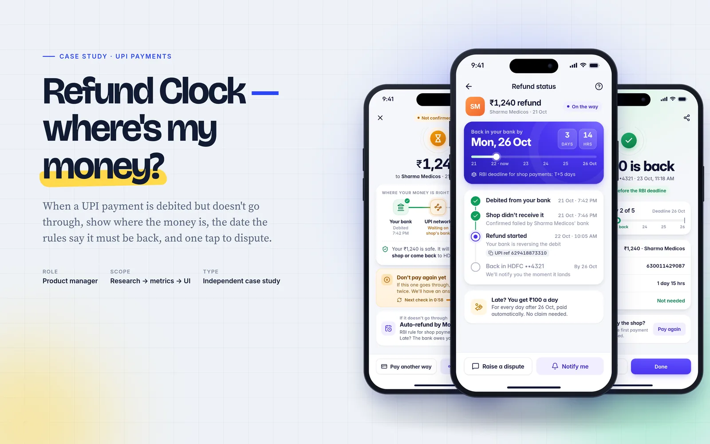
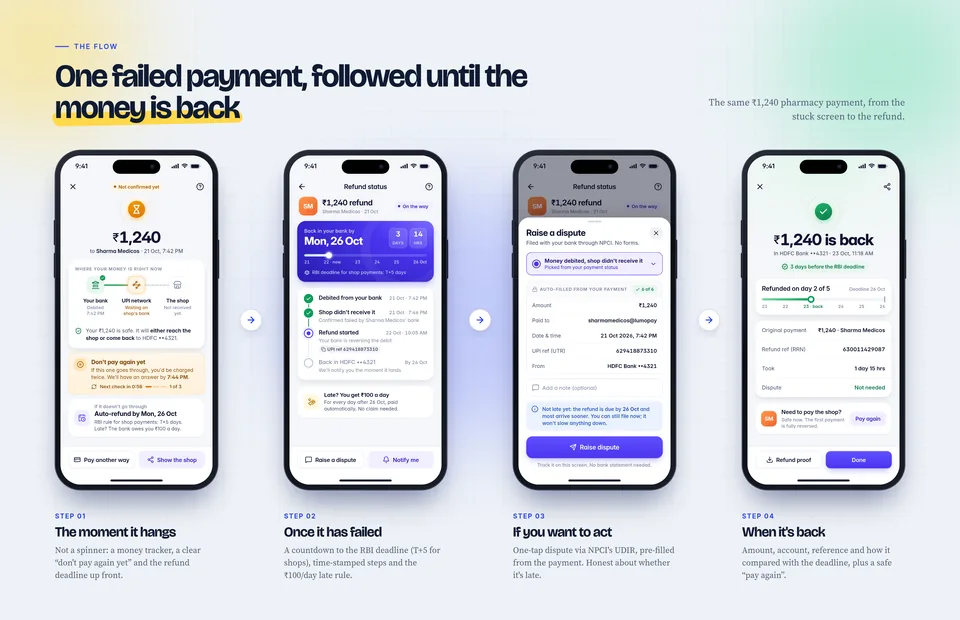
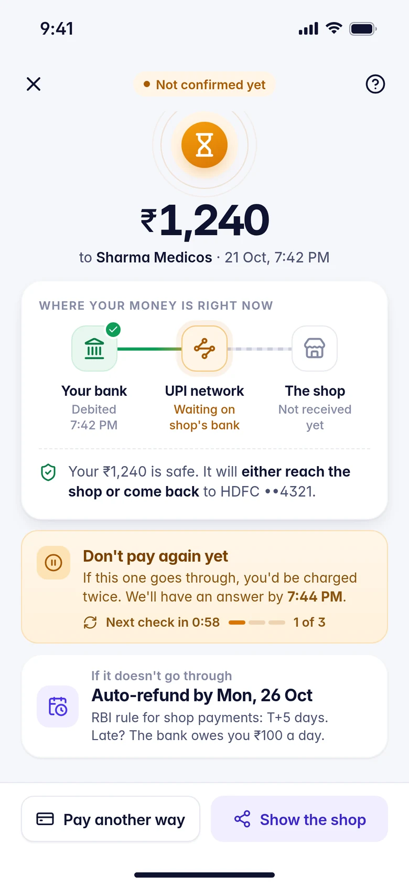
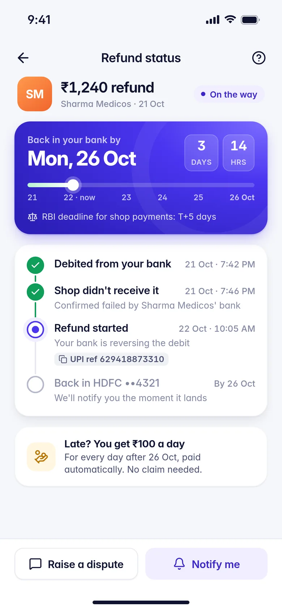
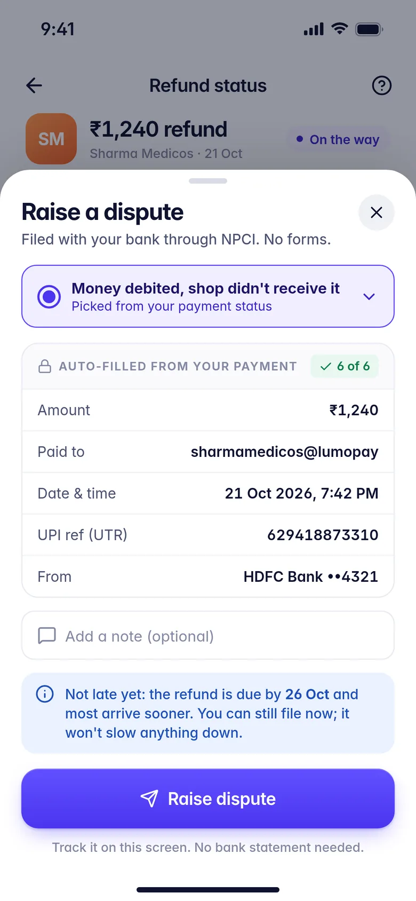
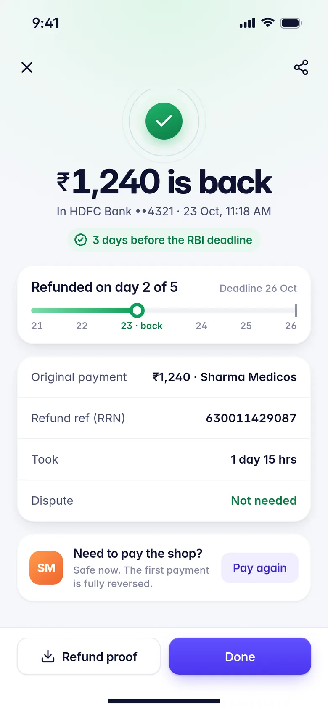

Case study · UPI payments · Independent concept
Refund Clock: where's my money?
A UPI payment fails, but the money has already left the bank. Users can't tell where it is or when it's coming back, even though RBI's rules already set the date. I designed a small flow that shows them.
Independent concept, not Paytm work. Built only from public information: RBI and NPCI circulars, published data, news and public user posts. “Lumo Pay” and “Sharma Medicos” are fictional, and every amount, time and reference number in the screens is illustrative.

The short version
- Problem: a payment is debited but not completed. The app shows a red “Failed” or a spinner, so the user retries, calls support or panics.
- Insight: the deadline already exists, users just never see it. RBI says the money must be back by T+1 (person to person) or T+5 (shops). After that the bank owes ₹100 a day, paid automatically.
- Solution: Refund Clock, made of four screens: where your money is now, a countdown to the deadline, a one-tap pre-filled dispute, and a clear “it's back”.
- How I'd measure it: a proposed north star, Calm Resolution Rate, plus guardrails for double payments, escalations and wrong statuses.
The rules are clear. The screens aren't.
| UPI case | Money must be back by | If late |
|---|---|---|
| Person to person | T+1 (beneficiary bank reverses) | ₹100 per day, automatically |
| Payment to a shop | T+5 (auto-reversal) | ₹100 per day, automatically |
T is the transaction date and is counted in calendar days. Compensation is paid “suo moto, without waiting for a complaint”. Source: RBI TAT circular, 20 Sep 2019.
Since 2025, the app also can't just keep refreshing. NPCI's OC 215 allows the first status check only after 90 seconds, and at most three checks in about two hours. “Pending” has to be designed as a state the user can live in for minutes, and “refunding” as one they can live in for days.
What users actually say
These are public post titles and complaints, quoted verbatim. The pattern isn't “my payment failed”. It's “nobody can tell me where my money is”.
UPI says “processing”, BHIM says “credited”, receiver says “not received” — RBI complaint filed
Money Debited but UPI Transaction Failed via BHIM and SBI Shows “Success”, BHIM Blames Bank.
the maximum time of resolving the complaint is 22nd october 2025
Recipient's bank network is down. You're not able to make payment to your recipient's bank.
Who it hurts Hypothesis
- Ravi, at a pharmacy counter. The app spins and the shopkeeper says “pay again”. He needs to know in ten seconds whether that's safe.
- Neha, splitting rent. ₹8,500 left her bank, but her flatmate didn't get it. She needs a date she can trust and proof she can forward.
Show the clock the rules already started
- Location beats status. “Failed” describes the payment, but users want to know where the money is: still in their bank, stuck in transit, or with the payee.
- A real date beats “5–7 working days”. Generic copy is often longer than the rule and uses business days, while the rule uses calendar days.
- “Don't pay again yet” is the most valuable sentence. Retrying while a payment is pending risks a double debit, the costliest outcome for the user.
- Disputes should be pre-filled, not prevented. UDIR lets the app file against the exact transaction, so there's no reason to ask for a UTR or a bank statement.
Refund Clock in four screens
The flow follows one ₹1,240 pharmacy payment from the stuck screen to the refund. Each screen is 390×844, built on the same small design system as my Reward Receipt case study.





How I'd measure it
These are proposed definitions, not results. Nothing here has been built or tested, and a baseline would need internal data.
North star
Calm Resolution Rate
The % of debited-but-not-completed UPI payments where the money is back (or the payment completes) within the RBI deadline, with no repeat payment attempt and no support contact before that deadline.
Guardrails
- Duplicate-debit rate: the same payee and amount paid again within 30 minutes while the first payment is still pending.
- Escalations beyond the app (NPCI or the RBI Ombudsman) per 10k failed payments must not rise. Calm mustn't mean suppressing real disputes.
- Status accuracy: payments shown as “refunding” that later succeed. The target is close to zero.
Inputs I'd watch
- Support contacts per 1k failed payments.
- Median time to a final status.
- Disputes filed before vs after the deadline.
- Status-check calls per transaction, kept within NPCI's limits.
What could go wrong
Risks
- The bank misses the date. Frame it as “the rules say by…”, not as a Lumo promise, and offer the dispute the moment the deadline passes.
- Pending turns into success. Never say “refunding” before there's a final failed status.
- “Don't pay again” blocks urgent buys, like medicine. Offer “pay another way” and explain the double-charge risk.
- Wrong deadline type. If P2P vs merchant is unknown, show the longer T+5.
What I'd do next
- 5 quick interviews to test the two hypothesised personas.
- A cohort dashboard of failed payments by deadline met or missed, and by bank.
- An A/B test of a generic “5–7 working days” message against the dated countdown, measuring support contacts and duplicate debits.
- Fill my research gap: app-store reviews and X posts.
Caveats: public posts are self-selected and lean negative. I could read Reddit post titles but not the full threads. The UDIR auto-chargeback timings come from a secondary source (Razorpay).
I shipped it as an AI feature
The next step was to let people just describe the problem. The Refund Clock Helper reads a message in English, Hindi or Hinglish (or a pasted bank SMS). Gemini extracts the facts, and code works out the RBI deadline and checks every reply before it's shown.
Evaluated on 50 synthetic cases, 20 of them held out: 100% classification and correct rule, 0% hallucinated rules and 0% unsafe advice.
Sources
- RBI: Harmonisation of TAT and customer compensation for failed transactions (Sep 2019)
- RBI: Online Dispute Resolution system for digital payments (Aug 2020)
- NPCI: UPI Dispute & Issue Resolution
- Google Pay: NPCI roles and the UPI dispute redressal mechanism
- Razorpay: all you need to know about NPCI-led UDIR
- NPCI OC 214: reduction in UPI response time (Apr 2025)
- NPCI OC 215: streamlining Check Transaction usage (summary, Apr 2025)
- Economic Times: NPCI attributes UPI outage to excessive API calls (Apr 2025)
- BusinessLine: bank-wise UPI technical declines (Apr 2025)
- Dataful: bank-wise UPI payer/payee performance (BD/TD definitions)
- RBI: Annual Report of the Ombudsman Scheme 2024-25
- The Hindu: UPI outage, users say transactions failing (Apr 2025)
- Google Pay Help: fix issues with payments to merchants
- User voice: r/UPI, r/UPI, r/CreditCardsIndia, consumercomplaints.in